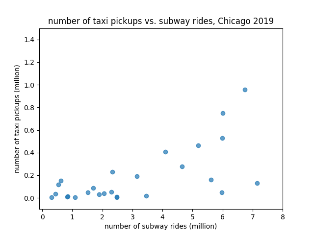
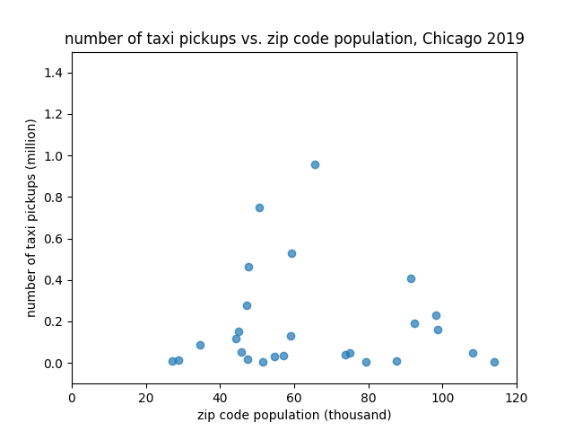
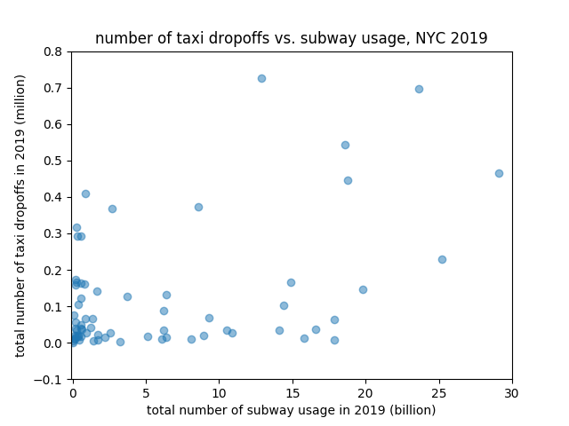

Transportation
T
r
a
n
s
f
o
r
m
a
t
i
o
n
Analysis Deliverable
Team members: Stephanie Carrero (scarrero), Melia Okura (mokura), Holly Zheng (yzheng40), Becky Mathew (rmathew7)
Overview:
This report contains our progress on the analysis part of the project.
To go to each section separately:
- Overview of our hypothesis Back to top
Our hypothesis is that there is a significant linear relationship between the dependent variable of taxi rides within a zip code and the independent variables of the number of station stations, the total number of subway rides, the population, and the average personal income of the same zip code.
- Visualizations Back to top
We started off with quite a lot of exploratory visualizations to illustrate some of the independent variables such as income and population.
We plotted histograms to document the average household income and population per zip code for Chicago. [Chicago_Income_Zip_Code_Viz.png] [Chicago_Pop_Zip_Code_Viz.png]
These histograms do not require any other contextualization to understand, as they have clearly labeled axes and titles. While these histograms do not explain the correlation, they merely serve to represent the disparities in population and income that are related to disparities in transportation accessibility and quality.
We have similar plots for New York but encountered challenges in visualization due to the greater number of zip codes in New York. This will be improved for reference.
We then examined scatter plots of the datasets hoping to see if there are patterns between our independent and dependent variables. When plotting for Chicago, we had to remove 5 zip code data points, because the numbers of taxi rides in these zip codes are significantly higher than other zip codes in the city.
Removing these extreme data points allowed us to have cleaner scatter plots where the points spread out in the range of the axis.
From these initial scatter plots, we managed to see weak correlation between our independent variables and the number of taxi rides in Chicago. For example, for the zip codes that have more subway rides, the number of taxi rides is also higher.

Another scenario we see from these initial scatter plots that is a little surprising is that population does not seem to correlate with the number of taxi rides within a zip code.

The initial scatter plots for New York City, however, show messier results with less obvious correlations.


As a further measure of exploratory visualization, we documented the average train pickups and dropoffs by zip code in Chicago. We might have chosen to communicate the result as average monthly pickups/dropoffs per station location instead.
Our histograms do not require any other contextualization.
[Chicago_Train_Dropoff_Zip_Code_Viz.png] [Chicago_Train_Pickup_Zip_Code_Viz.png]
- Stats techniques Back to top